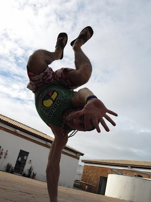
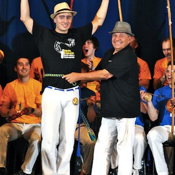
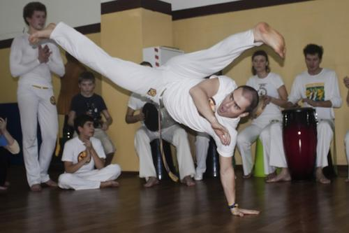

Интервью с Александром Рогозиным (Prof. Ninja, Real Capoeira)
Этим интервью мы открываем новый блог в рамках интернет-сообщества Capoeira Inside — «Капоэйра в России». Здесь будут публиковаться статьи об истории и развитии капоэйры в РФ, а также интервью с заметными российскими капоэйристами из разных школ и городов.
Краткая биография
— Имя: Александр Рогозин
— Apelido: Ninja
— Год рождения: 1982
— С какого года в капоэйре: 2000
— Группа: Real Capoeira (http://realcapoeira.ru/)
— Направление: Contemporânea.
Capoeira Inside (CI): Александр, привет! Во-первых, поздравляем тебя с недавним получением звания Professor и нового пояса. Во-вторых, специально для интернет-сообщества „Capoeira Inside“ мы планируем опубликовать серию интервью с российскими капоэйристами из разных школ и городов. Ты один из наших ;) Расскажи, пожалуйста, немного о своём пути в капоэйре, как у тебя всё началось?
Александр Рогозин (АР): Привет! Спасибо, сам все еще в шоке от своей быстрой «карьеры», ведь только год назад получил пояс «Instrutor», и вот на Батизаде в этом году такой вот сюрприз. Это, конечно, заслуга всей нашей команды тренеров, которые подготовили к батизаде и троке более 400 учеников. А, вообще, очень рад тому, что капоэйра развивается быстрыми темпами и становится все популярней среди российского населения.
Сам я начал заниматься совсем случайно… Мне было 18 лет, младшему брату Тимуру — 11. Мама попросила подобрать для него какую-нибудь спортивную секцию. Привел его на дзюдо – не понравилось. Жаловался, что скучно и совсем не весело. И, вдруг, совершенно случайно, посмотрел фильм „Только сильнейший“ с Марком Дакаскосом в главной роли. Очень понравилась и музыка и акробатика. В интернете нашел единственную школу ИНБИ. Привел Тимура, а меня не взяли… Набор был только до 14 лет. Однако, идея заниматься именно капоэйрой уже прочно сформировалась в голове. И, по благосклонности судьбы, через 3 недели, нашел контакты парня, который ушел из ИНБИ и начал вести занятия самостоятельно.
CI: Можешь поведать нам об истории капоэйры в России? По крайней мере, с твоей точки зрения как она зародилась у нас? Кто был первым? И где все началось?
АР: Началось все с инициативных ребят из ИНБИ, которые съездили в Бразилию, позанимались месяц и по приезду открыли школу капоэйры в Москве. Спасибо им за это, потому что без них возможно мы еще бы долго ждали ее появления в России.
Однако, из-за низкого уровня мастерства, ученики быстро догоняли тренеров и уходили, начиная преподавать самостоятельно. Таким образом, за довольно короткий промежуток времени в Москве появилось очень много школ.
CI: Что отличает российскую капоэйру от остальной (Европейской, Бразильской, Американской и, возможно, Израильской)?
АР: Российская капоэйра очень похожа на капоэйру в других странах. Те же проблемы, те же вечные споры о том, что лучше Ангола или Режионал. Вопрос в том — кто и где ее развивает.
Например: Местре Эдан (Израиль) – развивает капоэйру локально в Израиле. В итоге – это самая большая организация во всей Европе (более 7000 человек). Контра-местре Куэка (ученик местре Эдана), помимо того, что развивает капоэйру в Израиле сеет ее зарна по всему миру и несет с собой учение мастера, который добился выдающихся результатов в своей стране. Так у него школы в Израиле, Индии, Италии, США и России.
Почему мне нравится учиться у контра-местре Куэки и местре Эдана, потому что они искренне верят, что у нас (не бразильцев) получится развить капоэйру до невероятного уровня.
CI: Есть ли в России свои местре? Если да, то кто? Если нет, то будут ли когда-нибудь, по твоему мнению?
АР: Местре в России – это вопрос времени.
Есть мастера своего дела, такие например, как профессор Таруссо.
Действительно, удивительный человек, знающий очень много о капоэйре, занимавшийся более 10 лет у км Куэки, несомненный плюс, которого в том, что он говорит на русском.
CI: Что изменилось с тех пор, как ты начал изучать капоэйру?
АР: Во-первых, очень вырос уровень капоэйры. Капоэйра стала более совершенной, появились методики преподавания.
Капоэйра стала более адаптированной, безопасной, веселой и полезной для здоровья!
Если 10 лет назад средний преподаватель капоэйры – это был человек работающий и в свободное от работы время вел занятия, то теперь капоэйра вышла на профессиональный уровень. При желании здесь можно сделать карьеру от ученика до преподавателя или даже наставника (стать тем кто помогает развивать капоэйру в других городах и странах).
CI: Что капоэйра поменяла в твоей жизни?
АР: Капоэйра стала неотъемлемой частью моей жизни.
Я преподаватель, ученик и путешественник.
Я нашел свое призвание в капоэйре. Помочь людям измененить жизнь к лучшему с помощью капоэйры.
Моя миссия – это развитие и продвижение «Капоэйры для всех!».
Капоэйра это спорт будущего, где каждый может найти себя!
Капоэйра может помочь реализовать самые сокровенные мечты.
Для меня капоэйра больше чем спорт – это образ моей жизни, которому меня научил мастер мастеров контра-местре Куэка. Спасибо ему за это!

Блиц-опрос
Некоторые простые и не очень вопросы, которые не попали в большое интервью, но возможно помогут читателям лучше узнать тебя. Пожалуйста, отвечай быстро и, если возможно, односложно ;)
• Лучшее apelido? – Vermelho 27
• Местре? (Если местре, то кто?) – Mestre Edan
• Капоэйрист? (Лучший по твоему мнению) – Besouro
• Певец? (Лучший голос капоэйры) – Mestre Suassuna
• Песня? – Luta e brincadeira
• Ритм беримбау? — Miudinho
• Удар? – Rabo de arraia
• Фраза/Цитата – «Будьте реалистами, требуйте невозможного!»